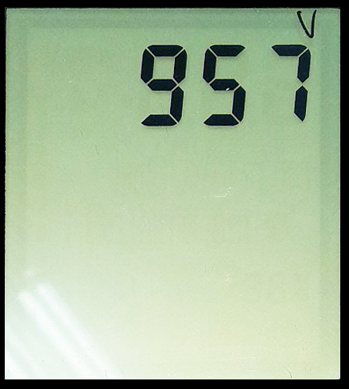

ДКС-АТ1121, АТ1123. Проверка УО
-
Подключить технологическую АКБ и клавиатуру. Подключить мультиметр в разрыв питания
-
Ввести инициализацию 957.
После прошивке, при включении дозиметра на табло появляется мигающее сообщение «Err25», сопровождающиеся прерывистым звуковым сигналом (ошибка данных энергонезависимой памяти, означающая, что в данном случае в памяти ничего не записано из-за первого включения).
Это значит, что прибор не инициализирован. Для этого нужно:
- Включить прибор
- Нажать три раза , на экране появится "---":
- Два раза нажать кнопку
- Набрать "957", для этого с помощью клавиш и выбирается цифра, а с помощью выбирается следующая позиция
- После ввода последней цифры, нажать 
- После инициализации прибор сам перезапустится и включится уже без ошибки
Также прибор можно инициировать с помощью ПО ATAS tech на ПК
-
Провести операцию 0/50
Операция 0/50 — это запись в память значение полного разряда батареи. Подключите АКБ к прибору (НЕ ВКЛЮЧАЙТЕ ПРИБОР). Подключите зарядное устройство (на экране появится отображение заряда и 5%) Отсоедините АКБ от платы, подождите 5 сек, на экране появится вместо 5% - 0% подключите АКБ к плате, на экране появиться отображение заряда и заряд в 50%
-
Проверить ток потребления и ток заряда
Подключить мультиметр в разрыв питания АКБ:

Включить прибор, замерить ток потребления, должен быть примерно 11 мА.
Подключить питание 12 В от адаптера в DJK разъем:

Замерить ток заряда, должен быть примерно 570 мА.
- При включении зажать клавишу ПОДСТВЕТКА — проверить наличие всех сегментов ЖКИ.
- Запустить двойную подсветку и проверить отсутствие мусора и темных пятен между подсветкой и ЖКИ.
- Поставить отметку маркером на защитной пленке ЖКИ об отсутствии царапин.
- Проверить управление: ПУСК, ПАМЯТЬ, ПОДСТВЕТКУ и ЗВУК.
-
Проверить обмен с БД.
Подключить УО к компьютеру через USB адаптер (АКБ можно не подключать, УО будет запитываться от адаптера):

Запустить "Background Calibration". Плата должна определиться в нем, как "АТ1123"
- Поставить отметку маркером на плате о проведенной проверке
- Отдать на монтаж